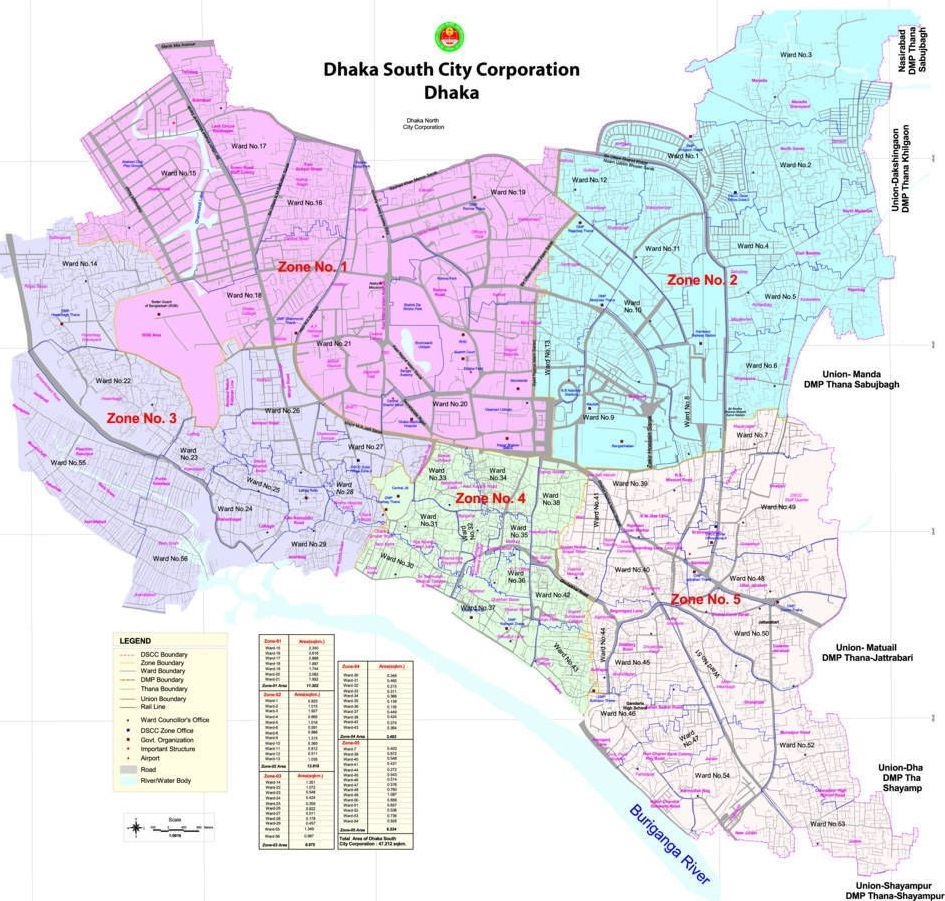

১৯ ফেব্রুয়ারী, ২০২১

ঢাকা মহানগর দক্ষিণ আওয়ামী লীগ
বাংলাদেশ আওয়ামী লীগ বাংলাদেশের একটি ঐতিহ্যবাহী এবং বর্তমান ক্ষমতাসীন রাজনৈতিক দল। এই রাজনৈতিক দলটির গোড়াপত্তন হয় ২৩ জুন ১৯৪৯ খ্রিষ্টাব্দে পূর্ব পাকিস্তান আওয়ামী মুসলিম লীগ প্রতিষ্ঠার মধ্য দিয়ে। পরবর্তী কালে এর নাম ছিল নিখিল পাকিস্তান আওয়ামী লীগ। ১৯৭০ সাল থেকে এর নির্বাচনী প্রতীক নৌকা। বাংলাদেশের স্বাধীনতা যুদ্ধে ১৯৫৫ সালে অসাম্প্রদায়িক রাজনৈতিক আদর্শের অধিকতর প্রতিফলন ঘটানোর জন্য এর নাম "আওয়ামী লীগ" করা হয়
হোসেন শহীদ সোহরাওয়ার্দী ও আবুল হাশেমের নেতৃত্বাধীন তৎকালীন বঙ্গীয় প্রাদেশিক মুসলিম লীগের একাংশের সম্মেলনের মধ্য দিয়ে ১৯৪৯ সালের ২৩ জুন ঢাকার টিকাটুলীর কেএম দাস লেন রোডের রোজ গার্ডেন প্যালেসে 'পূর্ব পাকিস্তান আওয়ামী মুসলিম লীগ' প্রতিষ্ঠিত হয়, যার সভাপতি ছিলেন টাঙ্গাইলের মওলানা আবদুল হামিদ খান ভাসানী এবং সাধারণ সম্পাদক টাঙ্গাইলের শামসুল হক। পরবর্তীকালে, ১৯৫৫ সালে মওলানা ভাসানীর উদ্যোগে ধর্মনিরপেক্ষতার চর্চা এবং অসাম্প্রদায়িক চেতনা প্রতিষ্ঠার লক্ষ্যে সংগঠনটির নাম থেকে পরে 'মুসলিম' শব্দটি বাদ দেওয়া হয়; নাম রাখা হয়: 'পূর্ব পাকিস্তান আওয়ামী লীগ'।
আওয়ামী লীগের জন্মসূত্রের সঙ্গে ঢাকা ১৫০ নম্বর মোগলটুলিস্থ পূর্ববঙ্গ কর্মী শিবিরের উদ্যোগের সম্পর্ক অনস্বীকার্য। ২৩ জুনের সম্মেলনের আয়োজনে গুরুত্বপূর্ণ ভূমিকা রাখেন শওকত আলী। তার উদ্যোগে ১৫০ নং মোগলটুলিস্থ শওকত আলীর বাসভবন এবং কর্মী শিবির অফিসকে ঘিরে বেশ কয়েক মাসের প্রস্তুতিমূলক তৎপরতার পর ২৩ জুনের কর্মী সম্মেলনে দলের ঘোষণা দেয়া হয়। শওকত আলীর অনুরোধে কলকাতা থেকে হোসেন শহীদ সোহরাওয়ার্দী একটি মামলা পরিচালনার কাজে ঢাকায় এলে তিনি শওকত আলীকে মুসলিম লীগ ছেড়ে ভিন্ন একটি রাজনৈতিক সংগঠন গড়ে তোলার পরামর্শ দেন। শওকত আলী এ পরামর্শে অনুপ্রাণিত হয়ে পূর্ববঙ্গ কর্মী শিবিরের নেতৃবৃন্দকে নতুন সংগঠন গড়ে তুলতে উদ্বুদ্ধ করেন। এসময় কর্মী শিবিরের প্রধান নেতা ছিলেন শামসুল হক। কামরুদ্দীন আহমদ, মো. তোয়াহা, অলি আহাদ, তাজউদ্দীন আহমদ, আতাউর রহমান খান, আবদুল আউয়াল, মুহম্মদ আলমাস, শামসুজ্জোহা প্রমুখ প্রথম দিকে এবং পরবর্তীতে শেখ মুজিবুর রহমান কর্মী শিবির কেন্দ্রিক রাজনৈতিক কর্মতৎপরতায় বিশেষভাবে যুক্ত ছিলেন। মুসলিম লীগের আবুল হাশিম-সোহরাওয়ার্দী গ্রুপ নেতৃবৃন্দ মুসলিম লীগের অন্যায় কাজগুলোর বিরুদ্ধে সোচ্চার হওয়ার লক্ষ্যেই এখানে কর্মী শিবির গড়ে তুলেছিলেন। মওলানা আবদুল হামিদ খান ভাসানী ১৯৪৯ সালে আসামের ধুবড়ী জেলখানা থেকে ছাড়া পেয়ে ঢাকা এলে তার সঙ্গে শওকত আলীর আলোচনা হয়। শওকত আলী মওলানাকে পূর্ববঙ্গ কর্মী শিবিরকেন্দ্রিক রাজনৈতিক তৎপরতার কথা জানান। এসময় মওলানা ভাসানী আলী আমজাদ খানের বাসায় অবস্থান করছিলেন। শওকত আলীর সঙ্গে তার প্রাথমিক আলোচনা সেখানেই হয়। এই আলোচনার সূত্র ধরে নতুন দল গঠনের জন্য একটি সাংগঠনিক কমিটি গঠনের প্রয়োজনীয়তা অনুভব করেন শওকত আলী। সেজন্যে ১৫০ নম্বর মোগলটুলিতে একটি বৈঠকের আয়োজন করা হয়। মওলানা ভাসানী সেই বৈঠকে যোগদান করেন। এসময় খোন্দকার আবদুল হামিদের সঙ্গে পরামর্শ করে শওকত আলীর উদ্যোগে ও প্রচেষ্টায় মওলানা আবদুল হামিদ খান ভাসানীকে সভাপতি, ইয়ার মুহম্মদ খানকে সম্পাদক এবং খন্দকার মুশতাক আহমদকে দপ্তর সম্পাদক করে অন্যদেরসহ একটি সাংগঠনিক কমিটি গঠিত হয়।
উপরোক্ত সাংগঠনিক কমিটি ১৯৪৯ সালের ২৩ ও ২৪ জুন রোজ গার্ডেনে নতুন দল গঠনের লক্ষ্যকে সামনে রেখে এক সম্মেলন আহ্বান করে। রোজ গার্ডেনে ২৩ জুনের বিকেল ৩টায় সম্মেলন শুরু হয়। সম্মেলনে উপস্থিত নেতৃবৃন্দের মধ্যে ছিলেন শামসুল হক, শওকত আলী, আনোয়ারা খাতুন, ফজলুল কাদের চৌধুরী, আবদুল জব্বার খদ্দর, খন্দকার মোশতাক আহমেদ, আতাউর রহমান খান, মওলানা আবদুর রশীদ তর্কবাগীশ, আলী আমজাদ খান, শামসুদ্দীন আহমদ (কুষ্টিয়া), ইয়ার মুহম্মদ খান, মওলানা শামসুল হক, মওলানা এয়াকুব শরীফ, আবদুর রশিদ প্রমুখ।
প্রতিষ্ঠাকালীন পূর্ব পাকিস্তান আওয়ামী মুসলিম লীগের সভাপতি হন টাঙ্গাইলের মওলানা আব্দুল হামিদ খান ভাসানী, সহ-সভাপতি হন আতাউর রহমান খান, শাখাওয়াত হোসেন ও আলী আহমদ। টাঙ্গাইলের শামসুল হক সাধারণ সম্পাদক। শেখ মুজিবুর রহমান, খন্দকার মোশতাক আহমদ ও এ কে রফিকুল হোসেনকে যুগ্ম সাধারণ সম্পাদকের দায়িত্ব দেওয়া হয়। কোষাধ্যক্ষ হন ইয়ার মোহাম্মদ খান। এসময় শেখ মুজিব কারাগারে অন্তরীণ ছিলেন। অন্যদিকে, পুরো পাকিস্তানের ক্ষেত্রে সংগঠনটির নাম রাখা হয় নিখিল পাকিস্তান আওয়ামী লীগ। এর সভাপতি হন হোসেন শহীদ সোহরাওয়ার্দী।
২৪ জুন বিকেলে নবগঠিত আওয়ামী মুসলিম লীগ মওলানা ভাসানীর সভাপতিত্বে ঢাকার আরমানিটোলা ময়দানে প্রকাশ্যে জনসভা করে। সভায় আনুমানিক প্রায় চার হাজার লোক উপস্থিত হয়।
১৯৫২ সালে শেখ মুজিবুর রহমান সংগঠনের ভারপ্রাপ্ত সাধারণ সম্পাদকের দায়িত্ব পান। পরের বছর ঢাকার 'মুকুল' প্রেক্ষাগৃহে পূর্ব পাকিস্তান আওয়ামী মুসলিম লীগের সম্মেলনে তাকে সাধারণ সম্পাদক নির্বাচিত করা হয়। ১৯৬৬ সাল পর্যন্ত ১৩ বছর সাধারণ সম্পাদকের দায়িত্ব পালন করেন শেখ মুজিব। উল্লেখ্য যে পূর্ব পাকিস্তান আওয়ামী মুসলিম লীগ ছিলো তৎকালীন পাকিস্তানে প্রথম বিরোধী দল।
প্রতিষ্ঠার পর থেকেই দলটি প্রাদেশিক স্বায়ত্ত্বশাসনের ওপর বিশেষ গুরুত্বসহ ৪২ দফা কর্মসূচি গ্রহণ করে। শুরুর দিকে দলটির প্রধান দাবিগুলোর মধ্যে ছিল রাষ্ট্রভাষা হিসাবে বাংলার স্বীকৃতি, এক ব্যক্তির এক ভোট, গণতন্ত্র, সংবিধান প্রণয়ন, সংসদীয় পদ্ধতির সরকার, আঞ্চলিক স্বায়ত্তশাসন এবং তৎকালীন পাকিস্তানের দু'অঞ্চলের মধ্যে বৈষম্য দূরীকরণ।
শেখ মুজিবুর রহমান ১৯৫৪ সালের নির্বাচনে মুসলিম লীগকে ক্ষমতাচ্যুত করার জন্য অন্যান্য দলকে সঙ্গে নিয়ে যুক্তফ্রন্ট গঠন করতে আওয়ামী মুসলিম লীগ মুখ্য ভূমিকা পালন করে। ১৯৫৩ সালের ৪ ডিসেম্বর দলটি কৃষক শ্রমিক পার্টি, পাকিস্তান গণতন্ত্রী দল ও নেজামে ইসলামের সঙ্গে মিলে যুক্তফ্রন্ট গঠন করে।
১৯৫৪ সালের মার্চের আট থেকে ১২ তারিখ পর্যন্ত অনুষ্ঠিত পূর্ব পাকিস্তান প্রাদেশিক পরিষদের নির্বাচনে ২৩৭টি মুসলিম আসনের মধ্যে যুক্তফ্রন্ট ২২৩টি আসন পায়। এরমধ্যে ১৪৩টি পেয়েছিল আওয়ামী মুসলিম লীগ।
২৪ বছরের পাকিস্তান শাসনামলে আওয়ামী মুসলিম লীগ আতাউর রহমান খানের নেতৃত্বে দু'বছর প্রদেশে ক্ষমতাসীন ছিল এবং হোসেন শহীদ সোহরাওয়ার্দীর নেতৃত্বে কেন্দ্রে ১৩ মাস কোয়ালিশন সরকারের অংশীদার ছিল।
১৯৫৫ সালে ঢাকায় অনুষ্ঠিত দলের তৃতীয় সম্মেলনে দলের নাম থেকে 'মুসলিম' শব্দটি বাদ দেওয়া হয়; নতুন নাম রাখা হয়: 'পূর্ব পাকিস্তান আওয়ামী লীগ'।
পররাষ্ট্রনীতি বিষয়ে মতপার্থক্যের কারণে ১৯৫৭ সালে দল ভাঙন দেখা দেয়। ওই বছরের ৭ ও ৮ ফেব্রুয়ারি কাগমারি সম্মেলনে দলে বিভক্তির ঘটনা স্পষ্ট হয়ে ওঠে। এ অবস্থায় মাওলানা ভাসানী ন্যাশনাল আওয়ামী পার্টি (ন্যাপ) নামে একটি নতুন রাজনৈতিক দল গঠন করেন।
আওয়ামী লীগ প্রতিষ্ঠার পর থেকে ১৯৫৪ সালের যুক্তফ্রন্ট-সরকার গঠন করে। ১৯৭০ সালের নির্বাচনে আওয়ামী লীগ ১৬৯ আসনের মধ্যে ১৬৭টি আসনে জয়লাভ করে। কিন্তু পাকিস্তানি শাসকদের স্বৈরতান্ত্রিক মনোভাব ও শোষণের ফলস্বরূপ ১৯৭১ সালে স্বাধীনতা লাভের পর আওয়ামী লীগ সরকার গঠন করে। বঙ্গবন্ধু হত্যাকাণ্ডের পর দীর্ঘ সংগ্রাম করে ১৯৯৬ সালে সরকার গঠন করে। ২০০৮ সালের ২৯ ডিসেম্বর ৯ম জাতীয় সংসদ নির্বাচনে ২৩০টি আসন লাভ শেখ হাসিনার নেতৃত্বে বাংলাদেশ আওয়ামী লীগ একক সংখ্যাগরিষ্ঠতা অর্জন করে সরকার গঠন করে।

.jpg)
.jpg)
.png)
.png)
জরুরি হটলাইন

মাস্ক পরুন সেবা নিন

সুরক্ষা ওয়েবসাইটে কীভাবে নিবন্ধন করবেন
করোনা ট্রেসার বিডি

করোনা ভাইরাস প্রতিরোধে যোগাযোগ

ডেঙ্গু প্রতিরোধে করণীয়